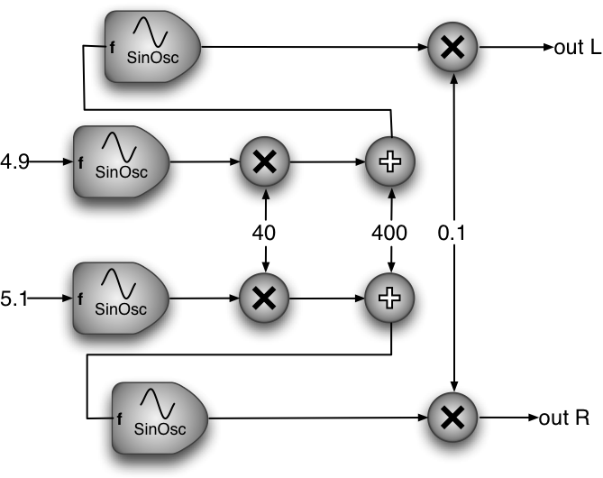

The output of this example is a two channel frequency modulated sine wave. This demonstrates the flexibility of UGen inputs which also of type UGen. This type of input may be a constant, another UGen and may be multichannel. If an input to a UGen is also type UGen and multichannel, the destination UGen itself automatically becomes multichannel as well. (There are some exceptions to this but these are documented in the relevant UGen e.g., Pan2.)
00001 #ifndef _MAINCOMPONENT_H_ 00002 #define _MAINCOMPONENT_H_ 00003 00004 #include <juce/juce.h> 00005 #include "../../UGen/UGen.h" 00006 00007 class MainComponent : public Component, 00008 public JuceIOHost 00009 { 00010 public: 00011 MainComponent () : JuceIOHost(0, 2) { } 00012 00013 UGen constructGraph(UGen const& input) 00014 { 00015 UGen modulator = SinOsc::AR( 00016 U(4.9, 5.1), // two channel constant 00017 0, // zero phase 00018 40, // modulation depth 00019 440); // modulation centre value 00020 UGen output = SinOsc::AR(modulator, 0, 0.1); 00021 return output; 00022 } 00023 }; 00024 00025 #endif //_MAINCOMPONENT_H_
Here we create another, intermediate, UGen to use as a modulator:
UGen modulator = SinOsc::AR(
Its first input (frequency) is a multichannel constant UGen created using the macro U (which is simply a shorthand for UGen).
U(4.9, 5.1), // two channel constant
The other arguments are just single constants:
0, // zero phase 40, // modulation depth 440); // modulation centre value
The modulator is then a two channel modulator with the same depth and centre values but with a different frequency. An equivalent (but more verbose) method would be:
UGen modulator = (SinOsc::AR(4.9, 0, 40, 440), SinOsc::AR(5.1, 0, 40, 440));
Notice here the parentheses around the comma-separated expression since this is using another method to create multichannel UGen instances by using the comma operator to concatenate channels i.e., UGen::operator,(). This may be useful if the two channels are completely different (which in this case they aren't).
The next line connects the modulator sine oscillators to the "carrier" sine oscillators' frequency inputs; then the output is returned:
UGen output = SinOsc::AR(modulator, 0, 0.1); return output;
This entire example could have been written as a single expression returned from constructGraph():
return SinOsc::AR(SinOsc::AR(U(4.9, 5.1), 0, 40, 440), 0, 0.1);
The UGen graph produced is shown by Figure 01.03.01 below.

Figure 01.03.01 More complex UGen graphs
1.5.9